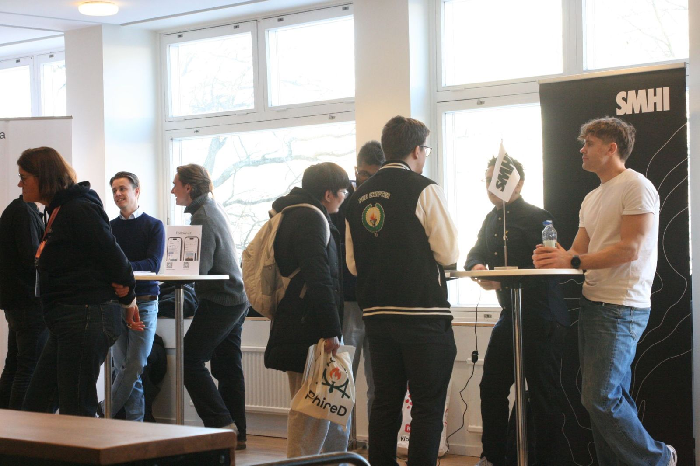
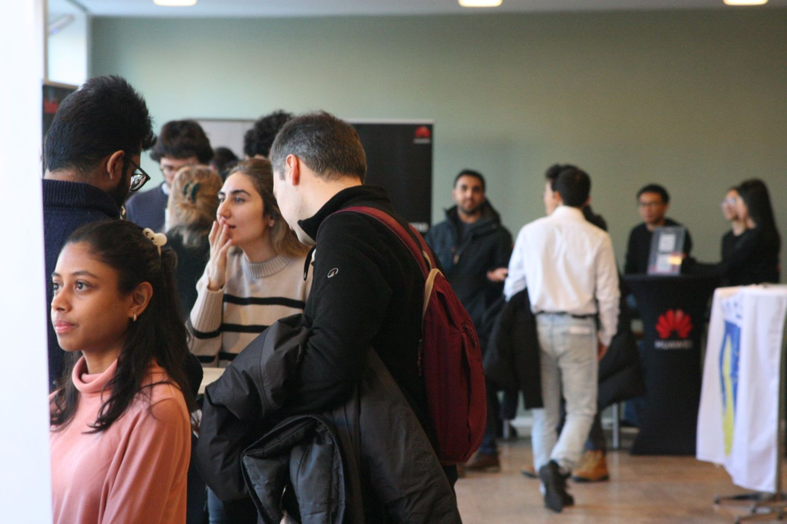
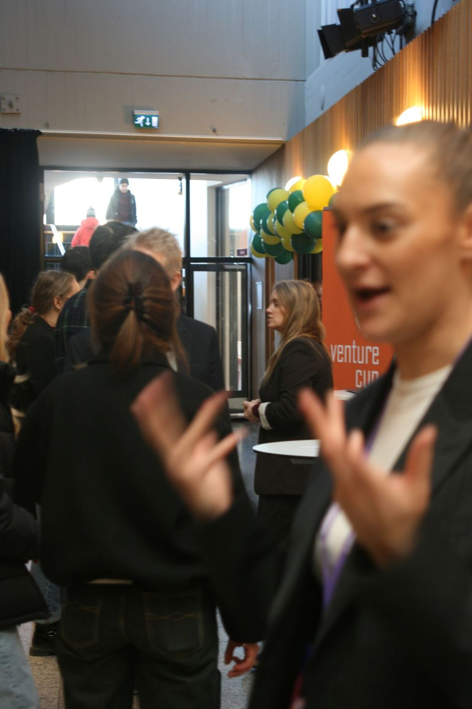
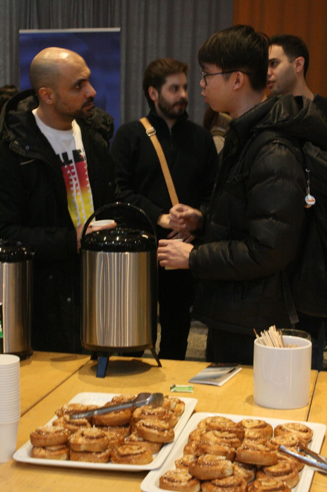

For PhDs and postdocs
- Talk research with scientists and engineers, not only recruiters
- Meet funding agencies and research institutes
- Join career-path workshops before the fair
Third edition 2 February 2027, Nymble, KTH Campus
The career fair for PhD students and postdocs at KTH. Industry, start-ups, institutes and funders in one place. Free entry.
PhireD connects researchers with employers in Sweden before they decide where to go next. Companies, research institutes and funding agencies meet you on campus.
60%
40%




Based on 2026. The 2027 programme and times will be posted here.
Industry, start-ups, institutes and funders, all on one floor.
On-the-spot tips from KTH Career on turning a thesis into a CV.
A professional headshot for your LinkedIn profile.
Coffee and cinnamon buns. Networking works better with sugar.
Before the fair: industry, academia, start-up or funding?
We'll email you when registration opens, remind you the week before, and send a short feedback form afterwards. Nothing else.
Tuesday 2 February 2027 at Nymble, the student union house on KTH Campus (map). Times will be confirmed. In 2026 the fair ran 12:00 to 15:00 on Nymble's second floor.
PhD students and postdocs at any stage, from KTH and other universities.
No. Entry is free.
Registration details will be posted here and on LinkedIn. Leave your email and we'll tell you when it opens.
Companies, research institutes such as RISE and FOI, start-ups, and funders such as the Swedish Research Council and SSF. Many bring people from their R&D teams.
Email business@dr.kth.se. In 2026, FOI and Westinghouse were silver sponsors and Siemens Energy was bronze sponsor.
PhireD KTH is run by volunteers from Dr/THS, the PhD Chapter at KTH, led by the chapter's Business Liaison. It started in 2025. In 2026 the fair doubled in size and added funding agencies, workshops, CV feedback and a photo booth.